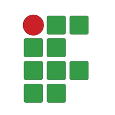

Sobre Mim:
Sou apaixonada por tecnologia, formada em técnico e T.I e Atualmente cursando Sistemas para Internet. Estou fazendo jovem aprendiz em gastronomia (minha segunda paixão) enquanto curso a Graduação e o curso de Desenvolimento web pelo Instituto Percorre.
Formação
-
Sistemas Para Internet - 3º Sem
Técnico em desenvolvimento T.I - Concluído
-

Experiências
- Jovem Aprendiz, Gastronomia - 2026/Atual
- Estágio TI, Secretaria Municipal de Saúde - 09/24 à 04/25
- Estágio Ensino Médio, Caixa Econômica Federal - 05/23 à 12/23
- Empacotadora, Companhia Zaffari & Bourbon - 04/22 à 01/23
Habilidades

Conhecimento consolidado de HTML5, utilizando estruturas semânticas

Conhecimento consolidado de CSS3, base solida em desenvolvimento responsivo

Conhecimento consolidado de JavaScript, com projetos utilizando a linguaguem e mais de um cursado área de dev WEB

Conhecimento consolidado de Java, com projetos utilizando a linguaguem, como o TCC

Conhecimento intermediário em Banco de dados, utilizando em projetos acadêmico e TCC